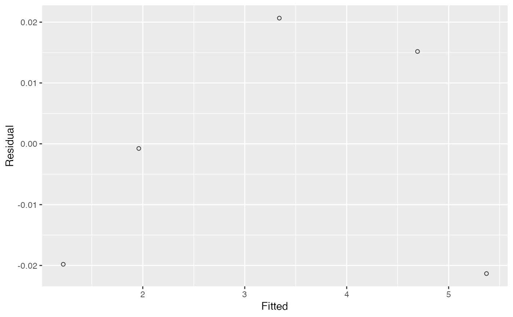
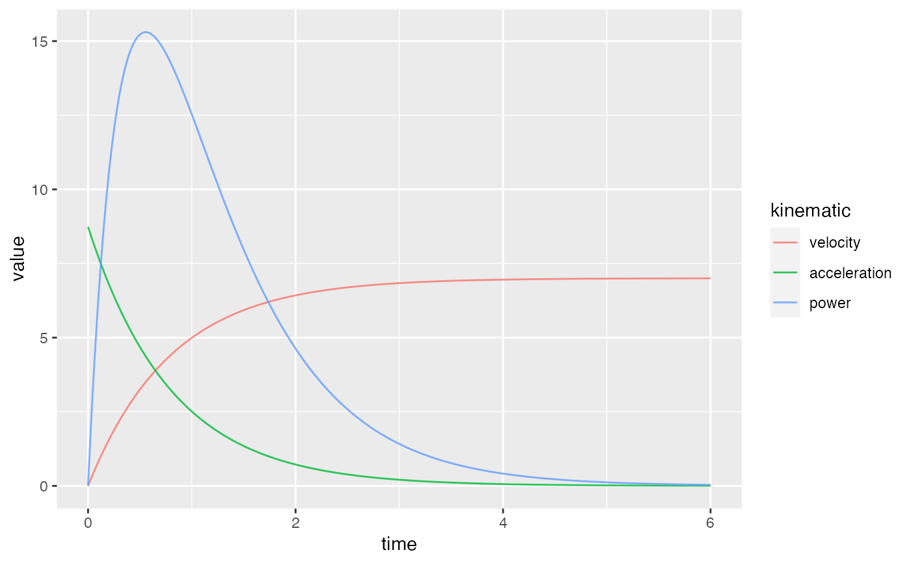

S3 method for plotting shorts_model object
# S3 method for shorts_model
plot(x, type = NULL, ...)shorts_model object
Not used
Not used
ggplot object
split_times <- data.frame(
distance = c(5, 10, 20, 30, 35),
time = c(1.20, 1.96, 3.36, 4.71, 5.35)
)
# Simple model with time splits
simple_model <- with(
split_times,
model_timing_gates(distance, time)
)
coef(simple_model)
#> MSS TAU MAC PMAX
#> 7.3937467 0.6377437 11.5936018 21.4300388
plot(simple_model)

# Simple model with radar gun data
instant_velocity <- data.frame(
time = c(0, 1, 2, 3, 4, 5, 6),
velocity = c(0.00, 4.99, 6.43, 6.84, 6.95, 6.99, 7.00)
)
radar_model <- with(
instant_velocity,
model_radar_gun(time, velocity)
)
# sprint_model$parameters
coef(radar_model)
#> MSS TAU MAC PMAX TC
#> 7.003222e+00 8.013434e-01 8.739352e+00 1.530091e+01 -3.962943e-05
plot(radar_model)
